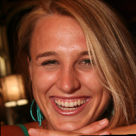
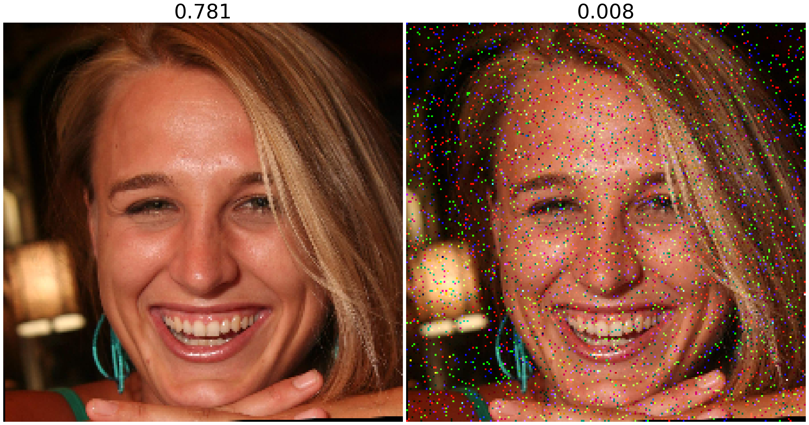
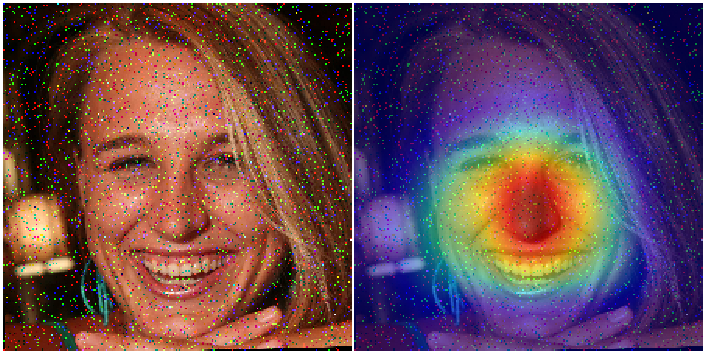

MODEL_PATH = "../models/weights/Densenet/densenet_cyborg_1/Logs/final_model.pth"
NETWORK = "densenet"
DATASET = "../data/images/ffhq_aligned/00001.png"
AMOUNT = 0.05Salience Reaction to Image Noise
It is reasonable to say that well-trained models should degrade their performance gracefully in presence of noise. What is proposed in this paper, and may complement the existing measures, is to compare the model’s salience maps obtained as the noise is being gradually added to the input, with the salience map calculated for clean samples.
Necessary Arguments
device = torch.device('cpu')Load The Model
Load weights of single binary DesNet121 model
weights = torch.load(MODEL_PATH, map_location=device)if NETWORK == "resnet":
im_size = 224
model = models.resnet50(pretrained=True)
num_ftrs = model.fc.in_features
model.fc = nn.Linear(num_ftrs, 2)
elif NETWORK == "inception":
im_size = 299
model = models.inception_v3(pretrained=True,aux_logits=False)
num_ftrs = model.fc.in_features
model.fc = nn.Linear(num_ftrs, 2)
elif NETWORK == "xception":
im_size = 299
model, *_ = model_selection(modelname='xception', num_out_classes=2)
else: # else DenseNet
im_size = 224
model = models.densenet121(pretrained=True)
num_ftrs = model.classifier.in_features
model.classifier = nn.Linear(num_ftrs, 2)/afs/crc.nd.edu/group/TAI/Users/painswor/Explain2Me-Framework-Example/.venv/lib/python3.9/site-packages/torchvision/models/_utils.py:208: UserWarning: The parameter 'pretrained' is deprecated since 0.13 and may be removed in the future, please use 'weights' instead.
warnings.warn(
/afs/crc.nd.edu/group/TAI/Users/painswor/Explain2Me-Framework-Example/.venv/lib/python3.9/site-packages/torchvision/models/_utils.py:223: UserWarning: Arguments other than a weight enum or `None` for 'weights' are deprecated since 0.13 and may be removed in the future. The current behavior is equivalent to passing `weights=DenseNet121_Weights.IMAGENET1K_V1`. You can also use `weights=DenseNet121_Weights.DEFAULT` to get the most up-to-date weights.
warnings.warn(msg)model.load_state_dict(weights['state_dict'])
model = model.to(device)
model.eval()sigmoid = nn.Sigmoid()Preprocessing
import torchvision.transforms as transformsif NETWORK == "xception":
# Transformation specified for the pre-processing
transform = transforms.Compose([
transforms.Resize([im_size, im_size]),
transforms.ToTensor(),
transforms.Normalize([0.5]*3, [0.5]*3)
])
else:
# Transformation specified for the pre-processing
transform = transforms.Compose([
transforms.Resize([im_size, im_size]),
transforms.ToTensor(),
transforms.Normalize(mean=[0.485, 0.456, 0.406], std=[0.229, 0.224, 0.225])
])Get Original Prediction
predictions = []Read the image
image = skimage.io.imread(DATASET)
image = Image.fromarray(image)
image
Model Preprocessing
tranformImage = transform(image)
tranformImage = tranformImage[0:3,:,:].unsqueeze(0)
tranformImage = tranformImage.to(device)Get Prediction from Model
with torch.no_grad():
output = model(tranformImage)PAScore = round(sigmoid(output).detach().cpu().numpy()[:, 1][0], 3)
predictions.append(PAScore)
print(PAScore)0.781Getting Prediction of Noisy Image
import numpy as npRead the Image
image_np = skimage.io.imread(DATASET)Generate Random Noise
salt_pepper = skimage.util.random_noise(image_np, mode='s&p', amount=AMOUNT)
salt_pepper = np.array((salt_pepper * 255).astype(np.uint8))
salt_pepper = Image.fromarray(salt_pepper)Model Preprocessing
tranformImage = transform(salt_pepper)
tranformImage = tranformImage[0:3,:,:].unsqueeze(0)
tranformImage = tranformImage.to(device)Get Prediction From Model
with torch.no_grad():
output = model(tranformImage)PAScore = round(sigmoid(output).detach().cpu().numpy()[:, 1][0], 3)
predictions.append(PAScore)
print(PAScore)0.008Display Both Images
fig = plt.figure(figsize=(10., 8.), facecolor='white')
grid = ImageGrid(fig, 111, # similar to subplot(111)
nrows_ncols=(1, 2), # creates 2x2 grid of axes
axes_pad=0.1, # pad between axes in inch.
)
for index, (ax, im) in enumerate(zip(grid, [image, salt_pepper])):
# Iterating over the grid returns the Axes.
ax.axis('off')
ax.imshow(im)
ax.set_title(predictions[index], fontsize=45)
fig.set_size_inches(32, 18)
#plt.savefig("noise-densenet-example.png", format='png', bbox_inches='tight', dpi = 500)
plt.show()
Save Results
Save PAScores to JSON
Initialize save location with DVCLive
live = Live(dir="../eval", dvcyaml=False, report=None)Save metrics
metrics = {
"pascore" : str(predictions[1]),
}
live.summary = metrics
live.make_summary()Save Images
live.log_image("noise.png", salt_pepper)Creating GradCAM
Transform the Images
image_tensor = transform(salt_pepper)Creating the Grad-Cam
cam_extractor = GradCAM(model)WARNING:root:no value was provided for `target_layer`, thus set to 'features'.Processing GradCAM
Preprocess your data and feed it to the model
out = model(image_tensor.unsqueeze(0))
activation_map = cam_extractor(out.squeeze(0).argmax().item(), out)Retrieve the CAM by passing the class index and the model output
cam = to_pil_image(activation_map[0].squeeze(0), mode='F')cam = overlay_mask(salt_pepper, to_pil_image(activation_map[0].squeeze(0), mode='F'), alpha=0.50)cam = cam.resize((im_size, im_size), resample = Image.BICUBIC)Displaying GradCAM
fig = plt.figure(figsize=(10., 8.), facecolor='white')
grid = ImageGrid(fig, 111, # similar to subplot(111)
nrows_ncols=(1, 2), # creates 2x2 grid of axes
axes_pad=0.1, # pad between axes in inch.
aspect=1.2
)
for index, (ax, im) in enumerate(zip(grid, [salt_pepper, cam])):
ax.axis('off')
ax.imshow(im)
#ax.set_title(predictions[index], fontsize=45)
fig.set_size_inches(32, 18)
#plt.savefig("entropy-densenet-example.png", format='png', bbox_inches='tight', dpi = 500)
fig.set_size_inches(32, 18)
plt.show()
live.log_image("cam.png", cam)NameError: name 'live' is not defined